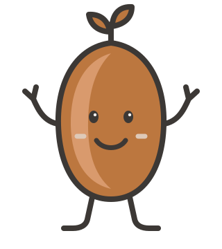
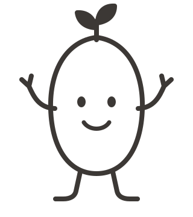

Маскот площадки — зерно свободного слова. Росток связывает персонажа со знаком-колосом, а открытая поза — с идеей независимого медиа.

Цветная печать, светлый фон

Один оттиск, флексография, шелкография

Тёмный однородный фон
Минимальное поле со всех сторон — ×, диаметр глаза маскота. Не помещайте внутрь текст, линии и другие знаки.
Файлы содержат только векторные контуры и плашечные RGB-цвета. Допечатную конвертацию в CMYK выполняйте с ICC-профилем типографии. Перед тиражом закажите цветопробу.
* Ориентировочная математическая конвертация, а не замена ICC-профиля. На немелованной бумаге допустимо естественное изменение насыщенности.